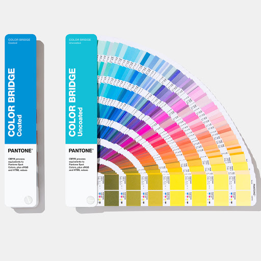

When people talk about Pantone colors, usually they're referring to the color specified in the Pantone Matching System (PMS).
This is a proprietary, standardized color system used across many industries in manufacturing, which describes colors by an allocated number (e.g. “PMS 125”).